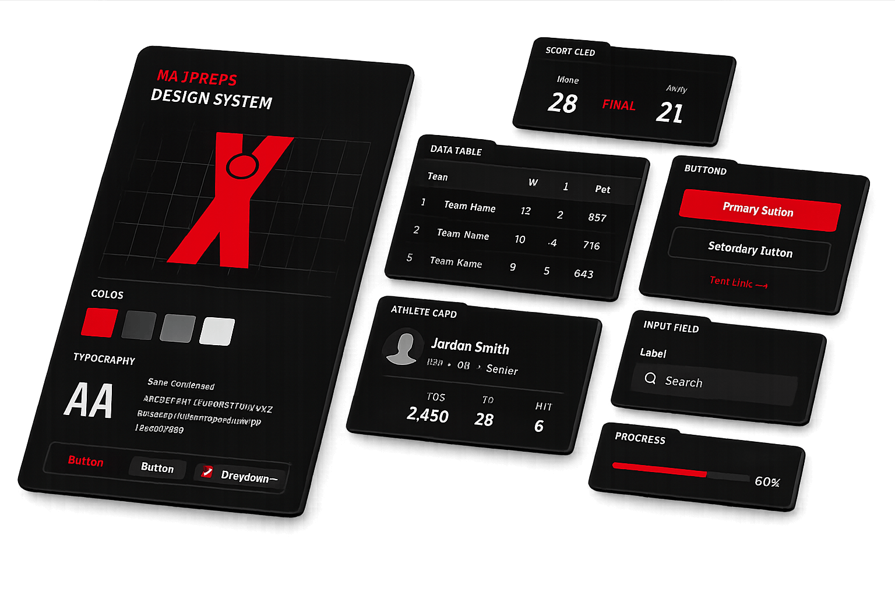

Executive Summary · 9-Month Contract
Replacing a fragmented UI with one modern, AI-ready design system.
MaxPreps currently has components scattered across multiple codebases with inconsistent styling, no shared library, and no formal release process. This project delivers a single, unified system that all teams build from — making future product work faster, cheaper, and more consistent.
Where we are
Foundation is done. Building the components.
We're — into the contract. The architecture, token system, and CI/CD pipeline are complete. We're now building the full component library.
— through the project
What's been solved
The hardest decisions are behind us.
How the codebase is structured, how themes work, how components run efficiently server-side — those decisions are locked in and everything else builds on top of them.
Phases 1 & 2 complete
What's happening now
Building components and replacing legacy code in parallel.
Phase 3 is building the full component library. Phase 4 is running concurrently — replacing legacy components in the existing site as new equivalents become available.
Phases 3 & 4 running concurrently
Where we're headed
AI-readiness grows throughout the project.
AI capability isn't a single milestone — it layers in as the system matures. Each phase makes the system more usable by AI tools, culminating in full machine-readable schemas and automated UI generation.
AI-ready · rolling rollout
Project Health
On Track
On Schedule
Tracking to plan
Complete
Architecture
Stable, no changes expected
In Progress
Component Build
Phase 3 active — 3 of ~28 done
Concurrent
Legacy Migration
Phase 4 running alongside Phase 3
Rolling
AI-Readiness
Progressing with each phase
Live
Docs & Storybook
Auto-deploys on every merge
What Success Looks Like
One unified system
A single, atomic design system used consistently across all MaxPreps products — no more components scattered across codebases or rebuilt from scratch per feature.
Design and engineering in sync
Every component in Figma has an exact counterpart in React with matching APIs. Designers and developers work from the same source of truth.
Governed and versioned
A formal release process, deprecation policy, and review model so the system evolves predictably — no more breaking changes sneaking in or components going stale.
Progressively AI-ready
AI capability layers in throughout the project — not a single end-state but a system that becomes more usable by AI tools at each phase, culminating in full machine-readable schemas.
Components Shipped
3
of ~28 planned
Packages
4
dsm · icons · tokens · types
Token Themes
5+
neutral · warm · red · dark
Days Elapsed
—
of 275 total
Open PRs
—
Live from GitHub
Open Issues
—
Live from GitHub
Recent Commits
Connecting to GitHub…
Component Build Progress
View roadmapFoundation (Ph 1–2)4 / 6
Core Components (Ph 3)3 / ~28
Legacy Replaced (Ph 4)0 / TBD
Done: 3
In Progress: 1
Planned: 24
Components by Phase
Recent Activity
| Type | Event | Date |
|---|---|---|
| Released | v0.0.1 — dsm, icons, tokens, types published to GitHub Packages | Mar 26 |
| Done | Button — server + client variants, full test coverage | Mar 26 |
| Done | FAIcon + IconWrapper shipped | Mar 26 |
| Done | Storybook deployed to GitHub Pages via CI | Mar 26 |
| Done | Token system — 5+ themes (neutral, warm, red, dark variants) via Terrazzo | Mar 26 |
Foundation Workstreams
Token & Theme System
Complete
Built a multi-theme CSS variable system (neutral, warm, red, and dark variants) using Terrazzo. Scales are inverted between light/dark so
gray-0 is always the softest surface — all components adapt to any theme without per-component logic. Implements the three-level token taxonomy from the SOW: global → semantic → component.DonePhase 2Terrazzo5 ThemesCSS Variables
Next.js Server / Client Architecture
Complete
Each component ships a
.server.tsx and a client variant. The server version is leaner — no JS hydration overhead. This pattern scales to every future component and was critical to establish before building on top of it. This is the architectural decision that took the most iteration to get right.DonePhase 2RSCNext.jsPerformance
Monorepo & Package Structure
Complete
pnpm workspaces with 4 published packages (dsm, icons, tokens, types) and 2 internal libraries (config, utilities). Each package exports ESM + CJS with TypeScript declarations via tsup. Published under
@playon-maxpreps to GitHub Packages.DonePhase 2pnpmtsupGitHub Packages
CI/CD & Release Pipeline
Complete
Three GitHub Actions workflows: build (validates every push), deploy-storybook (publishes to GitHub Pages on merge to main), and release (Changesets-based versioning and publish). Semantic versioning in place per SOW requirements.
DonePhase 2GitHub ActionsChangesetsSemantic Versioning
First Components — Reference Implementations
Complete
Button, FAIcon, and IconWrapper serve as the reference implementations — proving out the server/client split, theming integration, TypeScript types, and test patterns. Button has full unit test coverage via Vitest and validates the complete component authoring pattern all future components will follow.
DonePhase 3ButtonFAIconIconWrapperVitest
Typography System
In Progress
Defining the full type scale — headings, body, labels, captions — as token-aware components. Includes font loading strategy for Next.js. Once complete, this unlocks all layout and content components in Phase 3 that depend on consistent text styling.
ActiveType ScaleNext.js Fonts
Link Component
Planned
Wraps Next.js
Link with design system styling and the server/client pattern. Required before any navigation or content components can be built.PlannedNext.js Link
Spinner / Loader
Planned
Loading state primitive needed by forms, async content, and skeleton patterns. Depends on animation tokens being finalized alongside the typography system.
PlannedAnimation Tokens
Foundation Progress
Token & Theme SystemComplete
Next.js Server/Client ArchitectureComplete
Monorepo, CI/CD & Release PipelineComplete
Reference Components (Button, FAIcon, IconWrapper)Complete
Typography SystemIn Progress
Link + SpinnerPlanned
Shipped
3
Button, FAIcon, IconWrapper
In Progress
1
Typography system
Phase 3 Planned
~16
Forms, display, overlay
Phase 3+4 Total
~28
Full library target
All Components
| Component | Category | Status | Tests | Priority |
|---|---|---|---|---|
| Button | Foundation | Done | Yes | P0 |
| FAIcon | Foundation | Done | — | P0 |
| IconWrapper | Foundation | Done | — | P0 |
| Typography | Foundation | In Progress | — | P0 |
| Link | Foundation | Next Up | — | P0 |
| Spinner / Loader | Foundation | Planned | — | P0 |
| Input | Forms | Planned | — | P0 |
| Select / Dropdown | Forms | Planned | — | P0 |
| Checkbox | Forms | Planned | — | P1 |
| Radio | Forms | Planned | — | P1 |
| Card | Layout | Planned | — | P0 |
| Badge / Tag | Display | Planned | — | P1 |
| Avatar | Display | Planned | — | P1 |
| Tooltip | Overlay | Planned | — | P1 |
| Alert / Banner | Feedback | Planned | — | P1 |
| Toggle / Switch | Forms | Planned | — | P1 |
| Modal / Dialog | Overlay | Planned | — | P0 |
| Table | Data | Planned | — | P0 |
| Navigation / Nav Bar | Navigation | Planned | — | P0 |
| Tabs | Navigation | Planned | — | P1 |
| Toast / Notification | Feedback | Planned | — | P1 |
| Date Picker | Forms | Planned | — | P1 |
| Pagination | Navigation | Planned | — | P1 |
| Skeleton Loader | Feedback | Planned | — | P1 |
| Accordion | Layout | Planned | — | P2 |
| Breadcrumb | Navigation | Planned | — | P2 |
| Progress Bar | Feedback | Planned | — | P2 |
| Search | Forms | Planned | — | P1 |
Adoption Stages
Stage 1
Awareness
Teams have access to Storybook docs and the npm packages. The system exists and is discoverable.
Current
Stage 2
First Use
At least one team has integrated the package and is using components in a production feature.
Phase 3 Target
Stage 3
Growing Use
Multiple teams adopted. % of UI surface area built with the system is measurable and growing.
Phase 4 Target
Stage 4
Default Choice
New features default to the design system. Custom one-offs require explicit justification.
End of Contract
Planned Metrics — maxpreps-fe-react
| Metric | How We'll Measure It | Target | Current |
|---|---|---|---|
| Import coverage | Count @playon-maxpreps/dsm imports in site repo | — | Not tracking |
| Component usage count | Grep for each component name in consuming files | — | Not tracking |
| Page coverage % | Pages using ≥1 DS component / total pages | 50% by end | Not tracking |
| Teams using DS | Track by team directory / PR author | 3+ by end | Not tracking |
| Legacy component reduction | Detect remaining one-off rewrites vs DS usage | Decreasing | Not tracking |
Rollout Plan
Phase 3 — Stable foundation, first internal adopter identified
Deliver a stable set of foundation components. Identify the first internal team to integrate and use the design system in a production feature.
Phase 4 — Core components shipped, 2+ teams using the system
Ship forms and display components concurrently with legacy replacement. Begin tracking import coverage in maxpreps-fe-react.
Phase 5 — Machine-readable schemas, design system is the default for new feature work
~28 components, machine-readable schemas complete. AI-readiness matures throughout — this phase finalizes structured metadata and a proof-of-concept. All new features use DS components.
Phase 1
Done
Discovery & Audit
2–3 weeks
2–3 weeks
Phase 2
Done
Foundational Arch.
4–6 weeks
4–6 weeks
Phase 3
Active
Core Components
10–14 weeks
10–14 weeks
Phase 4
Active
Migration
8–14 weeks
8–14 weeks
Phase 5
Upcoming
Schemas & AI Rollout
1–3 weeks
1–3 weeks
Phase Detail
Phase 1
2–3 weeks
Complete
Discovery & Audit
Complete
Full audit of existing UI components and tokens. Theme and architecture analysis. Design debt and bundle size assessment. Produced the target architecture proposal that all subsequent phases are built on.
Phase 2
4–6 weeks
Complete
Foundational Architecture
Complete
Isolated monorepo with pnpm workspaces. Automated CI/CD (build, Storybook deploy, Changesets release). Semantic versioning. Three-level token taxonomy (global → semantic → component) built with Terrazzo. Theme-agnostic token system supporting 5+ themes. Next.js server/client component architecture established. v0.0.1 published.
Phase 3
10–14 weeks
Active
Core Component System
In Progress
Building the full atomic component library — primitives through patterns — with production-grade quality. Each component ships with WCAG accessibility compliance, a matching Figma component with 1:1 React API parity, and Storybook documentation including auto-generated prop docs and visual regression tests.
Phase 4
8–14 weeks
Concurrent
Migration & Debt Reduction
Running concurrently
Runs in parallel with Phase 3. Creates the migration playbook and deprecation strategy, then incrementally replaces legacy components in maxpreps-fe-react as new design system equivalents become available. Targets bundle size reduction and elimination of duplicate component imports. Codemods and linting rules prevent regression.
Phase 5
1–3 weeks
Upcoming
AI-Ready System Design
Planned
Defines machine-readable component metadata and deterministic schemas — structured definitions of every component's props, variants, and composition rules that AI tools can consume to generate UI automatically. Includes AI usage guidelines and a proof-of-concept demonstrating AI-generated UI built from the design system.
Engineering Outcomes
| Outcome | Phase | Status |
|---|---|---|
| Isolated monorepo with semantic versioning and automated CI/CD | Phase 2 | Done |
| Normalized token architecture (global, semantic, component-level) | Phase 2 | Done |
| Elimination of hard theme coupling — 5+ theme variants | Phase 2 | Done |
| Fully atomic component architecture (primitives → components → patterns) | Phase 3 | In Progress |
| 1:1 parity between Figma components and React APIs | Phase 3 | In Progress |
| Production-grade Storybook (auto docs, visual regression, a11y) | Phase 3 | In Progress |
| Migration playbook with codemods and linting rules | Phase 4 | Concurrent |
| Reduction in duplicate components and unnecessary imports | Phase 4 | Concurrent |
| Machine-readable component schemas for AI-assisted UI generation | Phase 5 | Planned |
| Formal governance model — review, deprecation, version upgrade processes | Phase 5 | Planned |
CI Workflows
3
All active
Test Runner
Vitest
Configured
Token Pipeline
Terrazzo
5+ theme variants
Package Registry
GitHub
@playon-maxpreps
Package Inventory
| Package | Name | Version | Purpose | Status |
|---|---|---|---|---|
| design-system | @playon-maxpreps/dsm | 0.0.1 | React components (client + server) | Active |
| tokens | @playon-maxpreps/tokens | — | Design tokens — CSS vars, 5+ themes | Active |
| icons | @playon-maxpreps/icons | — | SVG icon library (Font Awesome) | Active |
| types | @playon-maxpreps/types | — | Shared TypeScript types & env utils | Active |
| config | @playon-maxpreps/config | — | Shared lint / build config | Active |
| utilities | @playon-maxpreps/utilities | — | Shared JS utility functions | Active |
CI / Tooling
build.yml
Runs on every push. Compiles all packages via tsup and validates the monorepo build.
Active
deploy-storybook.yml
Deploys Storybook to GitHub Pages on every push to main. Docs always up to date.
Active
release.yml
Changesets-based release — tags, changelogs, and publishes to GitHub Packages.
Active
Vitest
Unit test runner at repo root. Button has initial coverage. Full coverage required per component going forward.
Partial coverage
Terrazzo
Token pipeline — transforms design tokens into CSS vars across all 5 color themes.
Active
tsup + pnpm workspaces
Monorepo build — each package exports ESM + CJS with TypeScript declarations.
Active
Storybook
Component docs deployed to GitHub Pages. Expanding to include auto-generated prop docs, a11y checks, and visual regression per Phase 3 requirements.
Expanding
Playground
Local development sandbox for testing components in context before committing to Storybook stories.
Local dev only